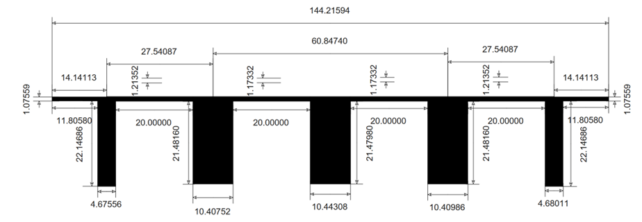
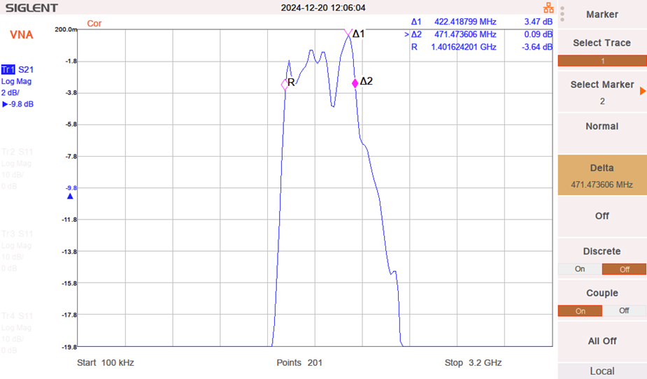

A custom stripline filter design project focused on high-frequency engineering challenges.
This project involved designing, simulating, and fabricating a custom RF stripline circuit using a Chebyshev bandpass filter topology. The primary objective was to achieve a center frequency of 1.89 GHz and a bandwidth of 600 MHz. The work was carried out as part of a university lab focused on exploring the fundamentals of high-frequency circuit design and measurement techniques.
The development process included several key steps:
Design Phase: Theoretical calculations to determine impedance and admittance parameters for a 5th-order Chebyshev filter.
Simulation and Validation: Using AWR software to simulate the design with discrete components and microstrip technology, focusing on S-parameter analysis.
Fabrication and Measurement: PCB fabrication using Isola 680 material, followed by post-fabrication testing to evaluate real-world performance against simulations.
While simulations provided an idealized understanding of circuit behavior, the transition to physical implementation presented challenges. Key takeaways included:
Handling fabrication tolerances and impedance mismatches that affected bandwidth and reflection characteristics.
Observing a 300 MHz shift in the filter bandwidth, likely due to soldering and manufacturing imperfections.
Identifying harmonic behavior and unexpected damping effects in transmission plots.